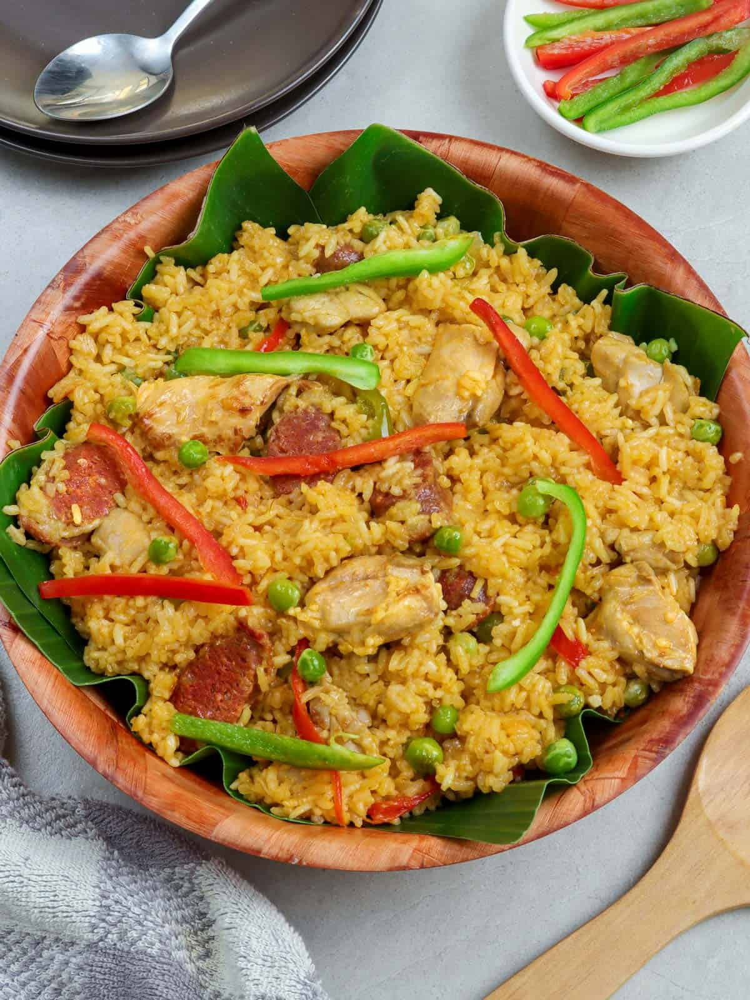

Arroz Valencia
Arroz Valenciana is a dish similar to Paella. The Filipino version of this
dish makes use of coconut milk, malagkit (glutinous or sweet rice), boiled
eggs, and chorizo, which is what this recipe is all about.
Ingredients
- 1/2 lb. chicken thigh or breast chopped
- 3 pieces chorizo de bilbao sliced diagonally
- 1/2 cup malagkit glutinous white rice
- 1 cup Jasmine rice
- 2 tablespoons tomato paste
- 1 medium red bell pepper cut into strips
- 1/2 cup raisins
- 1/2 cup frozen green peas
- 1 teaspoon paprika
- 2 cups chicken broth
- 1 cup coconut milk
- 1 medium tomato diced
- 1 medium yellow onion diced
- 3 cloves of garlic crushed
- 3 boiled eggs
- 3 tablespoons extra virgin olive oil
- a pinch of Spanish saffron
- Salt and pepper to taste
How to Cook:
- Combine the glutinous rice and jasmine rice. Wash with water twice and then drain. Set aside.
- Heat the olive oil in a paellera or wide pan.
- Saute the garlic, onion, and tomato until the onion and tomato becomes soft.
- Put-in the chopped chicken. Cook for 3 minutes.
- Add the chorizo de bilbao. Cook for 2 minutes.
- Add-in the salt, pepper, saffron, and paprika. Stir.
- Pour-in the chicken broth and coconut milk. Stir and let boil.
- Add-in the washed rice. Stir. Let boil.
- Add the tomato paste. Stir. Cover and simmer for 5 minutes.
- Put-in the raisins, and green peas. Cover and simmer for 8 minutes.
- Garnish with sliced boiled egg. Serve.
- Add-in the red bell pepper. Continue to simmer until the rice is fully cooked.
- Garnish with sliced boiled egg. Serve.
- Share and enjoy!